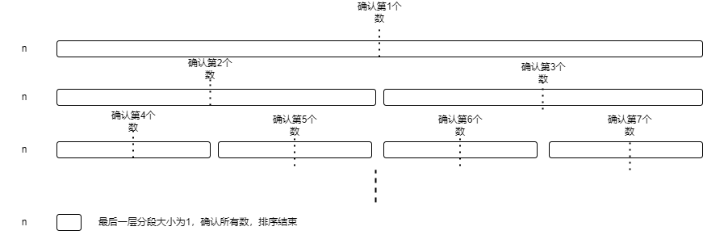

快速排序（QuickSort）
代码实现
递归版本（非稳定版）
/*arr为需要排序的数组，left为左边界，right为右边界*/
void quick_sort(vector<int> &arr, int left, int right) {
/*当前只有一个数（或边界left>right）的时候，就不需要排序了*/
if (left >= right) return;
/*选取位于最左边的数作为排序的标准，i从左边开始，j从右边开始*/
int temp = arr[left], i = left - 1, j = right + 1;
// int temp = nums[rand() % (right - left) + left]; // 可以rand的选值
while (i < j) {
/*从左边开始，寻找大于等于temp的数*/
do i ++ ; while (arr[i] < temp);
/*从右边开始，寻找小于等于temp的数*/
do j -- ; while (arr[j] > temp);
/*交换数字*/
if (i < j) swap(arr[i], arr[j]);
}
/*对左边的部分进行快排*/
quick_sort(arr, left, j);
/*对右边的部分进行快排*/
quick_sort(arr, j + 1, right);
}1、一次完整的遍历后，arr[j]和temp的关系
arr[j] <= temp- 为什么选取j而不选取i作为判断标准：因为需要保证j和j+1都不会越界，而i和i-1可能会越界
2、left<=right可否改为left==right
- 不可以，如果当前数组没有元素的话，下面取值temp的时候就会因此越界
3、while(i<j)可否换为i<=j
- 不可以。有可能会越界，例如：9，8
- 在第一轮遍历后，此时i和j是相等的，都是0，都指向9的位置
- 而在第二轮的时候
i++，到8的位置，接着取值再++的时候就越界
4、quick_sort(arr, left, j)可不可以改为quick_sort(arr, left, i)（或者quick_sort(arr,j+1,right)改为quick_sort(arr,i + 1, right)）
- 不可以。因为有可能会陷入死循环，例：9，8，7，6，5，4，3，2，9
- 此时temp选择了9，则第一轮的时候会交换9和9两个数（一个是左边的9，另一个是右边的9）
- 而在第二轮的时候，位于左边的i会一直递增到此时9的位置（右边的9），而此时右边的j会先往左走一步，停在此时2的位置
- 而因为此时
i>j，所以退出循环 - 即9，8，7，6，5，4，3，2，9，此时的i是指在9的位置的（是右边的9），j 是指在2的位置
- 而如果使用的是以i为参考边界的话，那么就会变成
quick_sort(arr,0,8)和quick_sort(arr,9,8)，这里右边的肯定是不行的 - 于是又变成了重新quick_sort原来的部分了，这样就会陷入无穷无尽的循环了
- 而如果用j作为参考边界的话，就可以有效地分开两边（
quick_sort(arr,0,7)和quick_sort(arr,8,9)） - 总结，对于i和j的位置统计，最后只会出现两种情况，第一种是i和j相同，第二种则是j在前，i在后
- 其次，一定要选择 j 和 j+1 作为参考，选择i的话就有可能陷入死循环
5、arr[i]<temp可不可以换为arr[i]<=temp（或者arr[j]>temp可不可以换为arr[j]>=temp）
- 不可以。对于一些数据，可能会出现越界的错误，例：9，8，7，6，5，4，3，2，1
- 假如此时temp选择了9，那么就会导致i一直往右走，而这里是没有对i的范围进行限定的，导致最后越界报错（反之也是一样的）
递归版本（稳定版）
void quick_sort_stable(std::vector<int>& nums, int left, int right) {
if (left >= right) {
return ;
}
int a = left, b = right;
std::vector<int> temp(right - left + 1, 0); // 用于拷贝的数组
int start = 0, end = temp.size() - 1;
int e = right, s = left;
int privot = nums[left];
while (left <= right) {
while (left <= right && nums[right] >= privot) { // 从右往左移动
nums[e--] = nums[right--];
}
while (left <= right && nums[left] < privot) { // 从左往右移动
nums[s++] = nums[left++];
}
if (left < right) {
temp[start++] = nums[left++];// 大的移到temp数组左段
temp[end--] = nums[right--];// 小的移到temp数组的右段
}
}
for (int i = end + 1; i < temp.size(); ++ i) {
nums[s++] = temp[i];
}
for (int i = start - 1; i >= 0; -- i) {
nums[e--] = temp[i];
}
quick_sort_stable(nums, a, s - 1);
quick_sort_stable(nums, s + 1, b);
}挖坑（问到的比较少；有点没看懂）
非递归版本
/*arr为需要排序的数组*/
void quick_sort(vector<int> &arr) {
/*栈用于记录需要排序的区间，存储的分别是left和right两个端点的下标*/
stack<array<int, 2>> s;
/*先初始化栈，放入数组的头尾下标*/
s.push((array<int, 2>){0, arr.size() - 1});
/*如果栈不为空，就代表还有没排序好的数据*/
while (!s.empty()) {
/*获取栈顶的数据区间*/
array<int, 2> a{s.top()};
/*下列会对该区间排序，所以就把其弹出*/
s.pop();
/*左边界小于右边界*/
if (a[0] < a[1]) {
/*基本的快排*/
int temp = arr[a[0]], i = a[0] - 1, j = a[1] + 1;
while (i < j) {
do i ++ ; while (arr[i] < temp);
do j -- ; while (arr[j] > temp);
if (i < j) swap(arr[i], arr[j]);
}
/*将区间再分为两个区间，然后再排序*/
s.push({a[0], j});
s.push({j + 1, a[1]});
}
}
}稳定性分析
- 非稳定排序（可以参考每次选出的哨兵temp，一开始是在左边，交换后都到了右边）
时间复杂度分析
最优的情况
每次都能刚好二分，即确认第一个数需要遍历n个数，确认第二个数需要遍历n/2个数，确认第三个数需要遍历n/4个数字
- 
总共有log2n层
假设每一层都要遍历n个数，时间复杂度便是nlog2n
最坏的情况
每次都选中的是最大或最小的那个数，即确认第一个数需要遍历n个数，确认第二个数需要遍历n-1个数，确认第三个数字需要遍历n-2个数
求和后时间复杂度为n^2
结论：最好和平均都是O（nlog2n），最坏则是O（n^2）
空间复杂度分析
- O（1）
优化
1、在选择哨兵的时候使用三数取中法，先取序列第一个元素、中间元素以及最后一个元素，再取这三个元素的中位数作为哨兵，可以避免取到边缘值而导致每次分割不均匀的情况（或者每次都随机选择元素）
2、因为在递归分割序列时，序列的长度会越来越短，又因为短序列排序中插入排序效率最高，所以可以设定一个阈值，当序列长度分割到阈值时切换为插入排序
3、当序列中存在大量相同元素，或者全是相同元素时，使用快排仍然会得到最低效率，这时可以采用聚集相等元素的方法，每次选择哨兵后，将与哨兵相同的元素放到序列中间，下次分割时中间这些值不参与分割
4、当递归层数过深的时候改用堆排序，虽然第一个优化方法避免了取到边缘哨兵，但还是有可能取到较边缘的哨兵，最坏的情况会导致递归层数过深，从而降低快排效率，所以每次递归要判断递归层数，达到一定深度就改用堆排序。（这是STL源码里实现的方法。之所以要用堆排序，我猜想可能是因为快排和归并都是基于递归的排序，此时递归深度已经太深，肯定不能再用了，而对于较长的序列使用插入排序效率也不是太高，所以选择了堆排序）
冒泡排序（BubbleSort）
代码实现
/*arr为需要排序的数组*/
void bubble_sort(vector<int> &arr) {
/*check为哨兵，如果没有出现数据交换，证明数据都是有序的，退出循环*/
bool check = false;
/*寻找第一大，第二大，第三大..的数据*/
for (int i = arr.size() - 1; i > 0; -- i) {
/*挨个挨个的比较数据*/
for (int j = 0; j < i; ++ j) {
if (arr[j] > arr[j + 1]) {
swap(arr[j], arr[j + 1]);
check = true;
}
}
/*没有发生数据交换，退出循环*/
if (!check) break;
}
}稳定性分析
- 是稳定排序（但如果是
arr[j] >= arr[j + 1]就不是稳定排序了）
时间复杂度分析
- 最好是O（n）（没有哨兵的优化就是O（n ^ 2）），最坏和平均都是O（n ^ 2）
空间复杂度分析
- O（1）
优化
- 每一次二级循环都放置一个哨兵，如果flag不变，则说明有序，就不用继续排序了
归并排序（MergeSort）
代码实现
自顶向下
void merge_sort(vector<int>& arr, int left, int right) {
/*如果右边边界小于等于左边边界，退出排序*/
if (left >= right) return;
int mid = (left + right) >> 1;
/*对左边数据排序*/
merge_sort(arr, left, mid);
/*对右边数据排序*/
merge_sort(arr, mid + 1, right);
/*这里假设数据左右数据都排好序了，进行归并操作*/
int i = left, j = mid + 1;
/*
temp用来存储中途的数据，这里原代码是作为一个全局变量
i从左边开始，j从中间开始
分别将数据按大小放入temp中
*/
vector<int> tmp{};
while (i <= mid && j <= right) {
/*哪一边的比较小，就放入哪一边的数*/
if (arr[i] <= arr[j]) tmp.push_back(arr[i ++ ]);
// 如果这里把=归到else这里，那么就不是稳定排序了
else tmp.push_back(arr[j ++ ]);
}
// 可能左边或右边的数没有全部放完，于是用while把数据全部放进去
// ps：左边和右边只可能有一边的数据没有完全放完
while (i <= mid) tmp.push_back(arr[i ++ ]);
while (j <= right) tmp.push_back(arr[j ++ ]);
/*把排好序的数据放回arr中*/
for (auto& t: tmp) arr[left ++] = t;
}自底向上
稳定性分析
- 是稳定排序（但可以修改等号来更改其是否稳定，参考代码的注解）
- 如果相等的时候取值左边，那就是稳定排序，否则就是不稳定排序
时间复杂度分析
- 假设一开始有n个数，每次对半的整理排序

- 那每一层需要排序的时间就是n，而又已知T(1)=0，所以现在只要求解这颗二叉树的层数即可
- 而二叉树的层数是log2n+1，去掉第一行就是log2n
- 所以最好和最坏的时间复杂度都是O（nlogn）
空间复杂度分析
- O（n）（需要额外的空间放置排序好的数组）
堆排序（HeapSort）
前置知识
堆，是具有以下性质的完全二叉树：
每个结点的值都大于或等于其左右孩子结点的值，称为大根堆
每个结点的值都小于或等于其左右孩子结点的值，称为小根堆
如何在一个完全二叉树组成的数组中，对于其中一个结点，找到它的叶子结点：
- 对于一层中的最左边的结点i，他到最右边的结点之间是差了i的，参考2的n+1次方和2的n次方的关系，这里的i就相当于2的n次方，最后一个节点就相当于2的n+1次方
对于大根堆，选择都是选择当前结点，两个子节点中三者的最大值作为父母结点
一个完全二叉树的最后一个非叶子节点的下标是n / 2 - 1（数组是从0开始计数的）（证明过程）
构建堆的时间复杂度是O(n)（证明过程）
代码实现
// 构建大根堆
void create_heap(std::vector<int> &arr, int x, int n) {
int l = x * 2 + 1, r = x * 2 + 2;
int max = x;
// 这里需要判断l和r是否小于n，因为是完全二叉树，有可能出现没有子节点的情况
if (l < n && arr[l] > arr[max]) max = l;
if (r < n && arr[r] > arr[max]) max = r;
if (max != x) {
std::swap(arr[x], arr[max]);
create_heap(arr, max, n);
}
}
// 堆排序
void heap_sort(std::vector<int> &arr) {
// 构建大根堆（因为是完全二叉树，所以从n/2-1的位置开始构造）
// 证明：设数组的长度为n，最后一个父母结点是从头开始数的第n/2-1的那个数（可以自己画一个图去求证）
int n = arr.size();
for (int i = n / 2 - 1; i >= 0; -- i) {
create_heap(arr, i, n);
}
// 每次将最大的元素放到最后，然后重新构建堆
for (int i = n - 1; i > 0; -- i) {
std::swap(arr[0], arr[i]);
create_heap(arr, 0, i);
}
}稳定性分析
- 非稳定排序
- 其实heapsort是否为稳定排序是一个很难评定的事情，因为每次重建堆都会修改数据的顺序..，所以一般认为是非稳定排序
时间复杂度分析
每次构建堆都是logn的时间复杂度，n个数就是nlogn
最好最坏平均都是O（nlogn）
空间复杂度分析
- O(1)
插入排序（InsertSort）
代码实现
void insert_sort(std::vector<int> &arr) {
int n = arr.size();
/*设定0到i-1范围内的数据都是已经排好序了的*/
for (int i = 1; i < n; ++ i) {
/*现在就需要将arr[i]放入到已经排好序了的数组中，可以理解为将当前的数据插入到前面的数组中*/
int temp = arr[i];
for (int j = i - 1; j >= 0; -- j) {
if (arr[j] > temp){
arr[j + 1] = arr[j];
arr[j] = temp;
} else {
break;
}
}
}
}稳定性分析
- 是稳定排序
时间复杂度分析
最优的情况
- 数组本身就是有序的，因此就不需要调整数据的位置，在第二个for中会进行break
- 此时的时间复杂度是O（n）
最坏的情况
- 数组有序，但是是和我们想要的顺序是相反的，因此每次循环都需要把数据全部往后挪
- 此时的时间复杂度是O（n^2）
空间复杂度分析
- O（1），不需要额外的空间
选择排序（SelectSort）
代码实现
void select_sort(std::vector<int> &arr) {
int n = arr.size();
/*每次选取当前第i大的数据，并把它放到后面*/
for (int i = n - 1; i > 0; -- i) {
int record = i;
/*在0-i的范围内选取当前的最大值*/
for (int j = 0, maxn = arr[i]; j < i; ++ j) {
if (maxn < arr[j]) {
record = j;
maxn = arr[j];
}
}
/*交换到它应对的位置*/
std::swap(arr[record], arr[i]);
}
}稳定性分析
- 非稳定排序
时间复杂度分析
- 无论数组是否有序，每次为了寻找当前的最大值，都必须要遍历一遍前面的数组
- 因此时间复杂度上，最好和最坏都是O（n^2）
空间复杂度分析
- O（1），不需要额外的空间
希尔排序（ShellSort）
代码实现
void shell_sort(std::vector<int> &arr) {
int n = arr.size(), increment = n;
/*本质上还是插入排序*/
/*但是这里是对以increment为单位，得到的数组，对其进行插入排序*/
/*从 局部有序到全体有序*/
do {
increment = increment / 3 + 1;
for (int i = increment; i < n; ++ i)
if (arr[i] < arr[i - increment]) {
int mid = arr[i];
for (int j = i - increment; j >= 0 && mid < arr[j]; j -= increment) {
arr[j + increment] = arr[j];
arr[j] = mid;
}
}
} while (increment > 1);
}稳定性分析
- 本质上还是选择排序，所以也是非稳定性排序
时间复杂度分析
- 最好是O（n），平均是O（n^1.3）， 最坏是O（n^2）
空间复杂度分析
- O（1）
题型
归并排序
23、合并K个升序链表
堆排序
- Top K
- 打印n个数组中最大的Top k
- 出现频率前k名的数据
快速选择
215、数组中的第K个最大元素
镜像：剑指 Offer II 076. 数组中的第 k 大的数字
// 方法一：快速选择
class Solution {
public:
int findKthLargest(vector<int>& nums, int k) {
int n = nums.size();
int left = 0, right = n - 1;
while (true) {
int idx = quick_select(nums, left, right);
if (idx == k - 1) {
// 这里为什么不可以下面不调整left和idx的位置，然后直接返回nums[left]
// 因为调整idx和left的位置另一个作用便是方便后续left和right调整位置
// 更准确的说是为了调整好right的位置
// 因为left直接跳过了idx包括idx的前面的全部部分
// 而right会继续到idx前面的部分查找
// 如果此时不调整位置的话，那么会出现两种情况：
// 第一种情况，right=idx，然后就会直接死循环（因为一直都以left为标准调整）
// 第二种情况right=idx-1，那么极有可能错过前面的数字，导致误判第k个大小的数）
return nums[idx];
} else if (idx < k - 1) {
left = idx + 1;
} else {
right = idx - 1;
}
}
}
int quick_select(vector<int>& nums, int left, int right) {
int mid = nums[left];
int idx = left;
for (int i = left + 1; i <= right; ++ i) {
if (nums[i] >= mid) {
++ idx;
swap(nums[idx], nums[i]);
}
}
swap(nums[left], nums[idx]);
return idx;
}
};
// 方法二：魔改快排
class Solution {
public:
int findKthLargest(vector<int>& nums, int k) {
return quick_sort(nums, 0, nums.size() - 1, k);
}
int quick_sort(vector<int>& nums, int left, int right, int k) {
if (left >= right) {
return nums[left];
}
int i = left - 1, j = right + 1, mid = nums[left];
while (i < j) {
do {++ i;} while (nums[i] < mid);
do {-- j;} while (nums[j] > mid);
if (i < j) swap(nums[i], nums[j]);
}
// 这里没写出来，需要注意的就是i和j最后的位置问题
// 第一种情况，i==j;第二种情况j=i-1
// 至于为什么要用j来表示，可以参考上面快排的注解
int length = right - j;
if (length >= k) {
return quick_sort(nums, j + 1, right, k);
}
return quick_sort(nums, left, j, k - length);
}
};剑指 Offer 40. 最小的k个数
镜像：面试题 17.14. 最小K个数
PS：找最小的k个数（或最小的第k个数），和找最大的k个数（或最大的第k个数）的区别，就是找最小的时候，可以直接用当前的坐标值进行判断（当前做坐标是i，就代表左边有i个数），而不改变k值；而找最大的k个数时，是不能根据坐标判断（当前坐标是i，但是不知道右边还有多少个数字），因此要修改k值
// 方法一：魔改快排（递归版）
class Solution {
public:
vector<int> getLeastNumbers(vector<int>& arr, int k) {
quick_sort_k(arr, 0, arr.size() - 1, k);
return vector<int>(arr.begin(), arr.begin() + k);
}
void quick_sort_k(vector<int>& arr, int left, int right, int k) {
if (left >= right) {
return ;
}
int i = left - 1, j = right + 1, mid = arr[left];
while (i < j) {
do ++ i; while (arr[i] < mid);
do -- j; while (arr[j] > mid);
if (i < j) swap(arr[i], arr[j]);
}
if (j > k - 1) {
quick_sort_k(arr, left, j, k);
} else if (j < k - 1) {
quick_sort_k(arr, j + 1, right, k);
}
}
};
// 方法二：魔改快排（非递归版）
class Solution {
public:
vector<int> smallestK(vector<int>& arr, int k) {
int n = arr.size();
int left = 0, right = n - 1;
while (true) {
if (left >= right) {
break;
}
int i = left - 1, j = right + 1, mid = arr[left];
while (i < j) {
do ++ i; while (arr[i] < mid);
do -- j; while (arr[j] > mid);
if (i < j) swap(arr[i], arr[j]);
}
if (j > k - 1) {
right = j;
} else if (j < k - 1) {
left = j + 1;
} else if (j == k - 1) {
break;
}
}
return vector<int>(arr.begin(), arr.begin() + k);
}
};973、最接近原点的K个点
重写cmp函数即可
class Solution {
public:
vector<vector<int>> kClosest(vector<vector<int>>& points, int k) {
auto cmp = [](const vector<int>& p1, const vector<int>& p2){
int r1 = p1[0] * p1[0] + p1[1] * p1[1];
int r2 = p2[0] * p2[0] + p2[1] * p2[1];
return r1 <= r2;
};
int n = points.size();
int left = 0, right = n - 1;
while (true) {
vector<int> mid = points[left];
int idx = left;
for (int i = left + 1; i <= right; ++ i) {
if (cmp(points[i], mid)) {
++ idx;
swap(points[idx], points[i]);
}
}
swap(points[left], points[idx]);
if (idx == k - 1) {
return vector<vector<int>>(points.begin(), points.begin() + k);
} else if (idx > k - 1) {
right = idx - 1;
} else {
left = idx + 1;
}
}
}
};八股

- 不稳定的排序只有：希尔排序，选择排序，堆排序，快速排序
对于有序的数据，哪种排序算法比较高效？
- 冒泡排序和插入排序，在有序数据的情况下都是O（n）
插入排序在什么时候比快速排序要高效？
- 当数组大致有序的时候，移动的数据比较少，时间上就会趋于O（n）
计数排序可以做到在数据稠密（重复数字比较多）的情况下，时间趋于O（n）
稳定性的定义：
- 假定在待排序的记录序列中，存在多个具有相同的关键字的记录
- 若经过排序，这些记录的相对次序保持不变，即在原序列中，r[i]=r[j]，且r[i]在r[j]之前
- 而在排序后的序列中，r[i]仍在r[j]之前，则称这种排序算法是稳定的；否则称为不稳定的
为什么要区分稳定排序和非稳定排序？
- 比如说有一份数据，是按照学号排好序了的，现在要再按照身高排序，同时要求如果遇到相同身高的就要按照学号排序
- 那么此时就需要用稳定排序进行排列，直接一步到位
- 即稳定排序可以让第一个关键字排序的结果服务于第二个关键字中数值相等的那些数